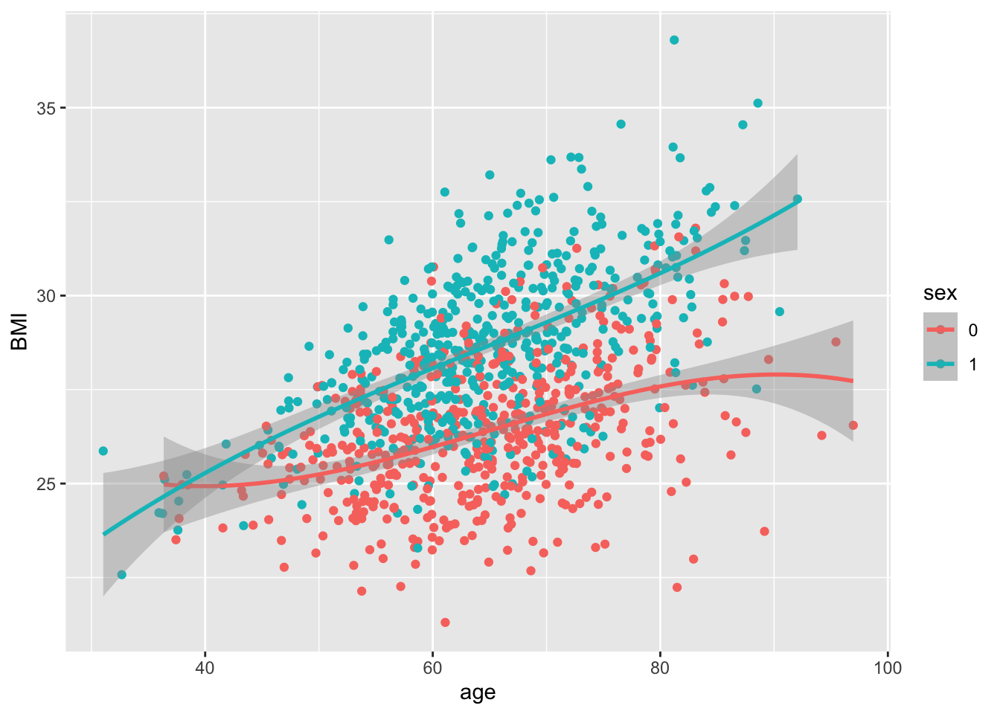
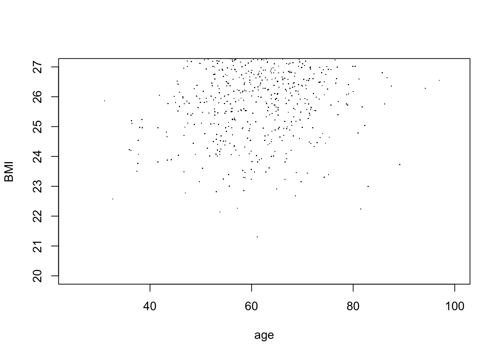
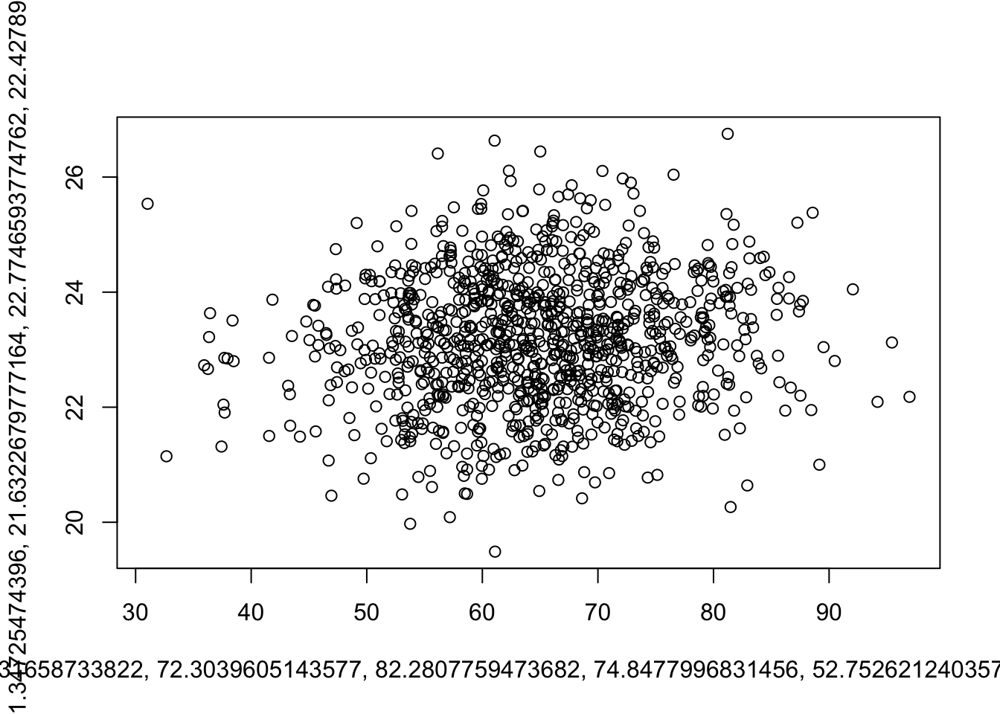
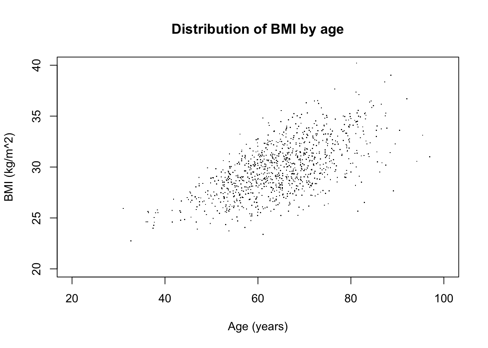
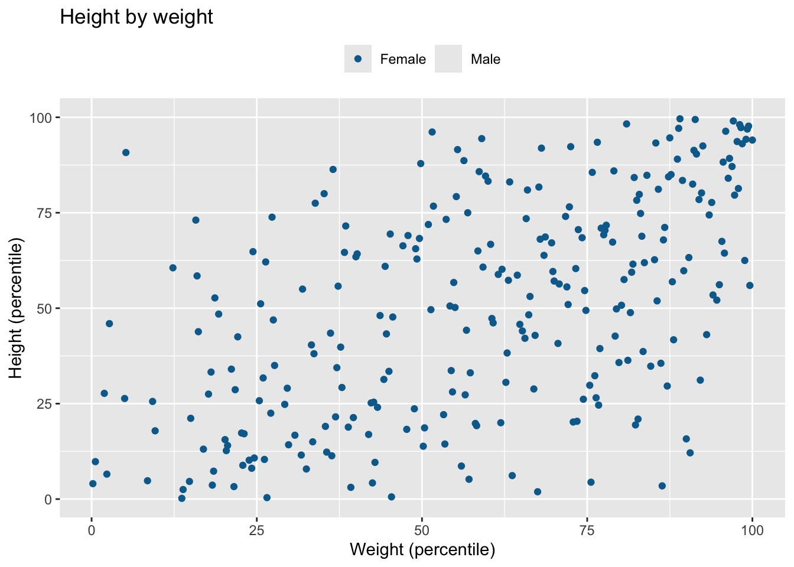
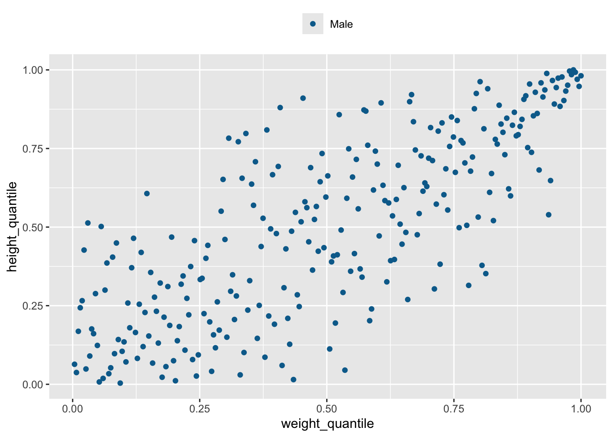
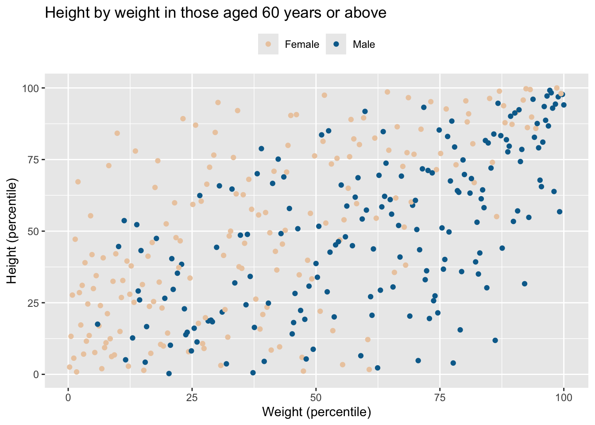

library(dplyr)
library(ggplot2)
set.seed(1234)Functions
Functions are a special type of object that take some input(s) and return some output. In short, they’re a way to wrap a lot of code in a single name and then call that entire bunch of code later, whenever you need it.
They are extremely useful for keeping your code readable and without repetitions.
Some data to work on
n <- 1000
df <- tibble::tibble(
x = 1:n,
age = rnorm(n,65, 10),
sex = rbinom(n, 1, 0.5) +1,
BMI = rnorm(n, 22 - 2*sex + sex*age/15 + age/15, sd = age/40),
weight = BMI * rnorm(n, 1.7, 0.1)^2
)
df |>
mutate(sex = factor(sex, levels = c(1,2), labels = c("Male", "Female"))) |>
ggplot(aes(y = BMI, x = age, color = sex, fill = sex)) +
geom_point() +
geom_smooth(method = lm,
formula = y ~ splines::bs(x,3) )
The basic syntax
Functions take in arguments, manipulate them in the function body and return an output:
my_function <- function(arg1) {
output <- arg1 + 1
return(output)
}
incremented <- my_function(arg1 = 3)
incremented[1] 4Often you’ll need to be able to pass multiple arguments:
multiplier <- function(arg1, arg2) {
result <- arg1 * arg2
return(result)
}
multiplier(arg1 = 4, arg2 = 6)[1] 24Actually, you don’t need to write which argument you’re setting the value of; R will insert them in the order they’re written:
multiplier(4, 6)[1] 24Sometimes, you want the ability to pass an argument, but you don’t want to have to do it explicitly every time; this calls for default values.
incrementer <- function(input_value, increment = 1) {
return(input_value + increment)
}
incrementer(input_value = 5)[1] 6incrementer(input_value = 5, increment = 2)[1] 7If your function has many arguments, you can name the ones you want to set:
my_plotter <- function(data, xlim = c(25,100), ylim = c(0,1)) {
with(data, plot(age, BMI, xlim = xlim, ylim = ylim, pch = "."))
}
my_plotter(df, ylim = c(20,27))
Unnamed arguments
You can add an ellipsis argument to give the user flexibility to add additional arguments beyond the ones you explicitly specified.
my_function <- function(data, ...) {
dots <- list(...)
return(dots)
}
my_function(df, stuff=2, more_stuff=3)$stuff
[1] 2
$more_stuff
[1] 3The syntax gets a bit tricky and can be difficult to understand, but this is extremely powerful. For example when you are calling other functions within your function, and you want to be able to pass on arguments down the line but without having to specify all (possibly hundreds) of them:
my_plotter <- function(data, ...) {
do.call(plot,
list(data$age, data$BMI, ...))
}Calling it without extra arguments:
my_plotter(df)
Using all the extra power:
my_plotter(df, type = "p",
xlim = c(20,100), ylim = c(20,40),
xlab = "Age (years)", ylab = "BMI (kg/m^2)", pch = ".",
main = "Distribution of BMI by age")
When to use functions
A fundamental tenet of coding is DRY: Don’t Repeat Yourself. If you’re repeating 1-2 lines, turning it into a function doesn’t make sense. But if you’re repeating more than 5-10 lines (and especially if you’re repeating it more than once), you need to wrap that in a function.
Reproducibility and robustness
An important benefit is that you avoid having multiple copies of the same code to try to keep up-to-date. Code often evolves over time (as errors become apparent, or you simply change your mind about previous choices). With functions, you simply have to change the code once, and every call to the function will be fixed.
data_cleaning <- function(data, title = "Height by weight") {
groups <- unique(data$sex)
cols <- wesanderson::wes_palette("Darjeeling2", 2)[groups+1]
groups <- tribble(
~from, ~to,
1, "Male",
2, "Female"
)
data <- data |>
mutate(sex = recode_values(sex, from = groups$from, to = groups$to) |> factor()) |>
mutate(age_rank = rank(age),
height = (weight/BMI)^0.5) |>
filter(height > 1.7) |>
mutate(height_quantile = ecdf(height)(height),
weight_quantile = ecdf(weight)(weight)) %>%
ggplot(., aes(x = weight_quantile, y = height_quantile, color = sex)) +
geom_point() +
labs(
title = title,
y = "Height (percentile)",
x = "Weight (percentile)"
) +
theme(legend.position = "top", legend.title = element_blank()) +
scale_color_manual(values = cols, label = groups) +
scale_y_continuous(labels = \(x) {x*100}) +
scale_x_continuous(labels = \(x) {x*100})
return(data)
}
df |> data_cleaning()Warning: Removed 253 rows containing missing values or values outside the scale range
(`geom_point()`).
df |> filter(age < 60) |> data_cleaning("Height by weight in those aged < 60 years")Warning: Removed 76 rows containing missing values or values outside the scale range
(`geom_point()`).
df |> filter(age >= 60) |> data_cleaning("Height by weight in those aged 60 years or above")Warning: Removed 177 rows containing missing values or values outside the scale range
(`geom_point()`).
Often, I’ll start by writing the code out in the open, but then wrap a function definition around it once it works and I know I’ll be reusing it. Equally importantly; don’t write functions just for the sake of writing functions. If the code is straightforward and won’t be reused, adding additional names (functions within functions within functions) only adds unnecessary complexity and obscurity.
The tidy way
If you’re familiar with {dplyr} and the wider tidyverse, you might have noticed a certain way of doing things; the tidy way. The key behind making tidyverse verbs so easy to put as pearls on a string is the data.frame-first principle; verbs will usually take the data as their first argument and return the data as their output:
# Not like this
add_col <- function(colname = "newcol", data) {
data[,colname] <- NA
return(data)
}
# Like this
add_col <- function(data, colname = "newcol") {
data[,colname] <- NA
return(data)
}
df |>
filter(sex == 1) |>
add_col(colname = "my_col") |>
head(5) |> gt::gt(id = "my_table")| x | age | sex | BMI | weight | my_col |
|---|---|---|---|---|---|
| 1 | 52.92934 | 1 | 29.43123 | 71.93419 | NA |
| 2 | 67.77429 | 1 | 26.72454 | 82.21106 | NA |
| 5 | 69.29125 | 1 | 28.70169 | 63.67831 | NA |
| 8 | 59.53368 | 1 | 26.06080 | 78.05817 | NA |
| 10 | 56.09962 | 1 | 26.69902 | 85.88806 | NA |
If I insist on putting the data somewhere else in the argument list, it’s still possible to pipe, but I have to be explicit about which argument the data is being piped into (using the _ placeholder—and that’s not as elegant):
add_col <- function(colname = "newcol", data) {
data[,colname] <- NA
return(data)
}
df |>
filter(sex == 1) |>
add_col(colname = "my_col", data = _) |>
head(5) |> gt::gt(id = "my_table2")| x | age | sex | BMI | weight | my_col |
|---|---|---|---|---|---|
| 1 | 52.92934 | 1 | 29.43123 | 71.93419 | NA |
| 2 | 67.77429 | 1 | 26.72454 | 82.21106 | NA |
| 5 | 69.29125 | 1 | 28.70169 | 63.67831 | NA |
| 8 | 59.53368 | 1 | 26.06080 | 78.05817 | NA |
| 10 | 56.09962 | 1 | 26.69902 | 85.88806 | NA |
The return() call
You want functions to have some sort of output. Whether you want the function to pass on some data that you can continue working with, to display a plot, to save something to a file, or something fourth, is up to you.
Implicit return: if you do not write a return() call, the function will return the last object that was produced or assigned
my_function <- function(input) {
input + 2
(input + 2)
}
my_function(5)[1] 7However, when the last operation in a function is assignment, the value is still returned by the function but it is made invisible (not printed):
my_function <- function(input) {
sum <- input + 2
}
# Simply calling the function does not print what was returned:
my_function(5)
# But explicitly asking for something out of the function does:
a <- my_function(5)
a[1] 7Note, there are ways to manually ask for this so-called suppression (using the invisible() function), or to force functions not to return anything.
If you want to return more than one thing from a function, you probably need to use a list or a vector:
my_function <- function(input) {
half <- input/2
double <- input * 2
character <- as.character(input)
return(list(half, double, character))
}
my_function(10)[[1]]
[1] 5
[[2]]
[1] 20
[[3]]
[1] "10"Somewhere you may come across something called global assignment (<<-), but be warned: this is almost definitely a bad idea.
The scope
It’s important to know that different parts of your code may have access to different sets of variables. This is called scopes. Every function creates its own walled-off section where it stores variables that may be created while the function runs. These variables are accessible (by default) only within the function’s scope, and are consequently destroyed when the function exits. The only thing that remains is whatever the function was told to return() as output (unless, of course, other things were made to remain; see above).